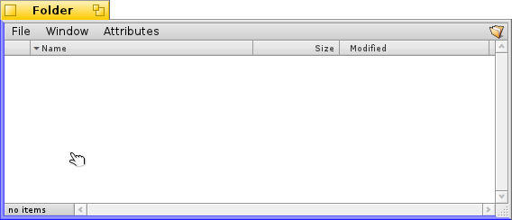
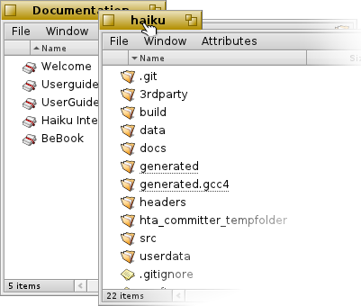

Français
Français Català
Català Deutsch
Deutsch English
English Español
Español Italiano
Italiano Magyar
Magyar Polski
Polski Português
Português Português (Brazil)
Português (Brazil) Română
Română Slovenčina
Slovenčina Suomi
Suomi Svenska
Svenska 中文 ［中文］
中文 ［中文］ Русский
Русский Українська
Українська 日本語
日本語| Index |
|
Déplacer et retailler facilement Empiler & juxtaposer Dialogues d'ouverture et de fermeture Réplicants |
L'interface graphique de Haiku
Haiku's graphical user interface is an integral part of the system. Unlike other Unix-like operating systems, there is no separate window manager and booting just into a command-line shell is not possible. Haiku's focus being on the desktop user, this is just not considered necessary.
Comme vous avez sans doute déjà expérimenté d'autres environnements graphiques, nous allons sauter les standards tels que les menus, les menus contextuels sur clic droit, le glissé&déposé, etc Regardons plutôt les quelques aspects uniques de l'interface graphique de Haiku.

Il n'y a que peu de choses dans l'interface graphique de Haïku qui ne sont pas évidentes et qui méritent une explication.
La Deskbar est un peu le menu "Démarrer" et la barre des tâches. Voir le sujet Deskbar.
- L’onglet jaune ne sert pas seulement à afficher le nom du programme ou du document :
- Vous pouvez le déplacer en maintenant la touche Maj enfoncée tout en le faisant glisser à une autre position, ce qui vous permet d'empiler un nombre de fenêtres et d'y avoir accès facilement par un onglet nommé.
- Vous pouvez minimiser un fenêtre avec un double-clic sur son onglet (ou avec Ctrl Alt M). Une fenêtre ainsi cachée peut être accédée via son entrée dans la Deskbar ou dans Twitcher.
- Vous pouvez envoyer une fenêtre à l'arrière plan avec un clic droit sur son onglet (ou sa bordure).
Le bouton de fermeture.
Le bouton « zoom » (ou Ctrl Alt Z). Dans la plupart des applications, il élargira une fenêtre à la taille maximale sans obstruer la Deskbar (Maintenez la touche Maj pour couvrir aussi la Deskbar). Cependant ce n'est pas obligatoire. La fenêtre du Tracker, par exemple, sera retaillée au mieux de son contenu.
La bordure de fenêtre. Un glissé-gauche déplace la fenêtre alors qu'un glissé-droit la redimensionne.
Le coin de redimensionnement.
 Une manière rapide de déplacer ou retailler les fenêtres
Une manière rapide de déplacer ou retailler les fenêtres
Le déplacement et le redimensionnement des fenêtres est une partie importante de l’interaction avec les applications qui s'exécutent simultanément. Plutôt que de viser le petit onglet jaune du titre, ou la bordure de fenêtre encore plus fine, il existe un moyen plus pratique pour déplacer une fenêtre. De plus, le coin de redimensionnement a une autre limitation : Il ne permet le redimensionnement qu'à partir de l'angle inférieur droit.
Même si un glissé-droit sur la bordure de la fenêtre pour redimensionner celle-ci fonctionne, vous aurez toutefois à viser soigneusement.
Pour répondre à ces questions, Haiku fournit une solution élégante pour manipuler les fenêtres à l'aide de la combinaison des touches CTRL ALT et la souris. Référez-vous au chapitre Raccourcis claviers pour d'autres combinaisons de touches concernant la gestion des fenêtres.
L’enfoncement des touches CTRL CMD enfoncées mettra en évidence les bordures les plus proches du pointeur de la fenêtre dans laquelle se trouve la souris. Déplacez la souris vers une autre bordure pour changer de cible. Cliquez avec le bouton droit de la souris puis faites la glisser pour redimensionner la fenêtre au niveau des bordure en surbrillance.
En maintenant les touches CTRL CMD enfoncées, cliquez avec le bouton gauche de souris n'importe où dans une fenêtre, puis faites glisser la souris pour déplacer la fenêtre. Un simple clic avec le bouton droit de la souris envoie la fenêtre en arrière plan.
Empiler & juxtaposer
L'interface utilisateur de Haiku fournit une fonctionnalité unique qui explique pourquoi les fenêtres ont un onglet jaune plutôt qu'une barre de titre sur toute leur largeur utile. C'est ce qu'on appelle « Empiler&Juxtaposer ».
Dans l'exemple ci-dessous, une fenêtre Tracker avec des signets est juxtaposée à la gauche d'une fenêtre WebPositive, qui est elle-même empilée avec une autre fenêtre Tracker montrant le dossier source haiku. Dans cette animation, l'utilisateur clique sur les onglets des fenêtres empilées pour les amener alternativement à l'avant l'une de l'autre.

Connecté de cette manière, les fenêtres du groupe peuvent être déplacées et redimensionnées ensemble - un environnement mieux agencé pour travailler sur un projet. Au lieu de chercher la bonne fenêtre contenant la documentation, l'éditeur ou peut-être un e-mail connexe concernant un projet sur lequel vous travaillez actuellement, empilez&juxtaposez les fenêtres les unes avec les autres.
Effectuer l'arrangement des fenêtres est une chose aisée : maintenez la touche OPT enfoncée pendant que vous faites glisser une fenêtre par son onglet à proximité d'une autre fenêtre jusqu'à ce que leurs onglets ou bordures soient mises en surbrillance puis relâchez le bouton de la souris.
Empiler&Juxtaposer se compose de deux fonctions complémentaires.
|  | « Empiler » consiste à mettre les fenêtres les unes sur les autres, les onglets de titres étant ainsi automatiquement ré-agencés. |
 | "Juxtaposer" signifie coller les fenêtres entre elles horizontalement or verticalement. |
La séparation s'effectue de la même manière, en maintenant la touche OPT tout en déplaçant la fenêtre hors du groupe par son onglet.
Les panneaux Ouvrir et Enregistrer
Lorsque vous ouvrez ou enregistrez un fichier à partir d'une application, un panneau comme celui-ci apparait :

Il dispose de toutes les choses habituelles : Une liste des fichiers du dossier en cours
à choisir si vous êtes dans un panneau de sauvegarde, un champ texte pour entrer un nom de fichier, et une liste déroulante pour les formats de fichiers différents ainsi que leurs paramètres.
Vous pouvez remonter aux dossiers parents avec la liste déroulante au dessus de la liste des fichiers.
Si vous avez déjà une fenêtre Tracker ouverte avec l'emplacement d'un fichier, vous pouvez simplement faire glisser un fichier ou la représentation d'un dossier (à savoir le symbole à l'extrême droite de la barre de menu) dans le panneau. Cela modifie le panneau à ce nouvel endroit.
Les raccourcis clavier
De nombreux raccourcis dans les panneaux Ouvrir et Enregistrer sont les mêmes que ceux utilisés dans le Tracker. En plus des commandes qui sont également disponibles via le menu , il y en a quelques unes moins évidentes :
| Alt N | Crée un nouveau dossier. | |
| Alt E | Permet de renommer l'entrée sélectionnée. | |
| Alt ↑ | Ouvre le dossier parent. | |
| Alt ↓ ou Entrée | Ouvre le dossier sélectionné. | |
| Alt D | vous envoie vers votre bureau. | |
| ALT H | vous envoie vers votre dossier personnel. |
Pour les raccourcis claviers dans Haiku, veuillez vous référer au chapitre consacré àce sujet.
Les favoris et dossiers récents
Le menu (favoris) des panneau ouvrir et sauvegarder met à votre disposition les dossiers récemment visités et les emplacements favoris que vous avez vous même définis. Comme indiqué par la petite flèche, vous pouvez également utiliser ces emplacements pour naviguer plus bas dans la hiérarchie par l'intermédiaire des sous-menus.

Pour ajouter un favori, naviguez jusqu'à la destination et choisissez . À partir de maintenant il apparaîtra dans tout les panneaux open/save.
Pour supprimer un favori, choisissez et supprimer l'entrée.
Tous les favoris sont conservés dans /boot/home/config/settings/Tracker/Go/.
Vous pouvez donc y ajouter et supprimer directement des liens vers des fichiers et dossiers.
Les réplicants
Les réplicants sont de petites applications autonomes, qui peuvent être intégrés dans d'autres programmes. Pour peu que l'option soit activée dans la Deskbar, vous reconnaîtrez une partie réplicable d'une application par sa petite poignée, généralement situé dans son coin inférieur droit.

L'endroit le plus important qui accepte les réplicants est le bureau : faites-y simplement glisser leur petite poignée.
Le Réplicant fait maintenant partie du bureau, et l'application d'origine n'a pas besoin d'être démarrée pour que cela fonctionne.
Un clic droit sur la poignée d'un Réplicant ouvrira un menu contextuel, où vous affichera une fenêtre avec l'application d'origine, et d'où vous pourrez supprimer le Réplicant ().
Par exemples, le graphique de ActivityMonitor, l'appliquette Workspaces ou DeskCalc sont des applications réplicables.